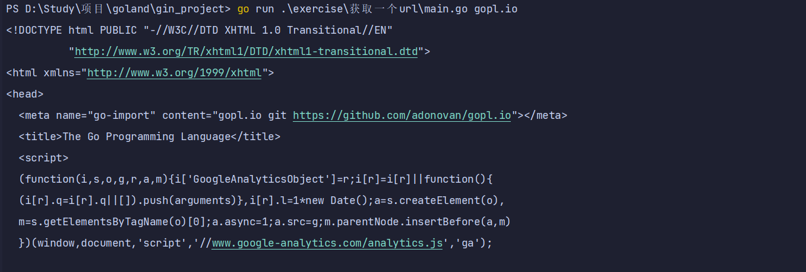

1.主要使用net/http和io/ioutil包
2.http.Get函数是创建HTTP请求的函数,resp这个结构体中,Body字段包括一个可读的服务器响应流
3.ioutil.ReadAll函数从response中读取到全部内容,resp.Body.Close关闭resp的Body流
4.用os.Exit函数来终止进程，并且返回一个status错误码
5.使用Fprintf与表示任意类型默认格式值的动词%v，向标准错误流打印一条信息
6.strings.HasPrefix(s, prefix string) bool,判断字符串s是否以prefix 开头
练习 1.7： 函数调用io.Copy(dst, src)会从src中读取内容，并将读到的结果写入到dst中，使用这个函数替代掉例子中的ioutil.ReadAll来拷贝响应结构体到os.Stdout，避免申请一个缓冲区（例子中的b）来存储。记得处理io.Copy返回结果中的错误。
练习 1.8： 修改fetch这个范例，如果输入的url参数没有 http:// 前缀的话，为这个url加上该前缀。你可能会用到strings.HasPrefix这个函数。
练习 1.9： 修改fetch打印出HTTP协议的状态码，可以从resp.Status变量得到该状态码。
package main
import (
"fmt"
"io"
"net/http"
"os"
"strings"
)
func main() {
// 循环命令行参数
for _, url := range os.Args[1:] {
//加入前缀 当参数不为 http:// 开头 则进行拼接
if !strings.HasPrefix(url, "http://") {
url = "http://" + url
}
// 获取当前 url
resp, err := http.Get(url)
// 异常捕获
if err != nil {
//向标准错误流打印信息
fmt.Fprintf(os.Stderr, "fetch: v%\n", err)
//终止进程
os.Exit(1)
}
// 获取 resp 中 Body 信息
// b, err := ioutil.ReadAll(resp.Body)
// 避免申请一个缓冲区,直接到标准输出流 从 resp.Body 读，并且写入 os.Stdout
io.Copy(os.Stdout, resp.Body)
// 关闭 Body 避免资源泄露
resp.Body.Close()
if err != nil {
fmt.Fprintf(os.Stderr, "fetch: reading %s: %v\n", url, err)
os.Exit(1)
}
fmt.Println("")
// 输出 code 码
fmt.Printf("%s", resp.Status)
}
}
执行 go run .\exercise\获取一个url\main.go gopl.io 或 go build {文件名} --> ./文件名 gopl.io